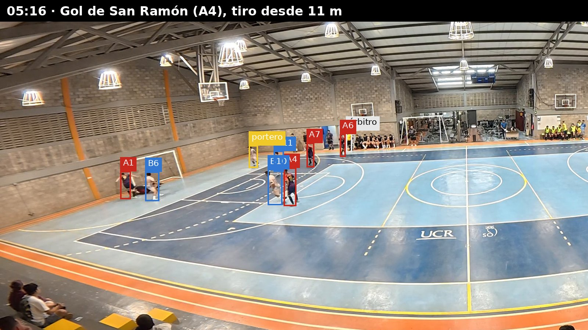
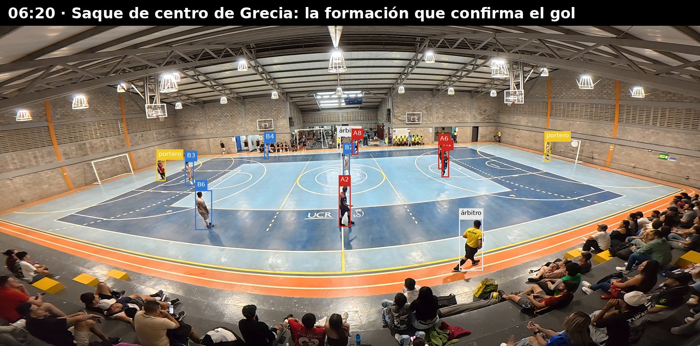
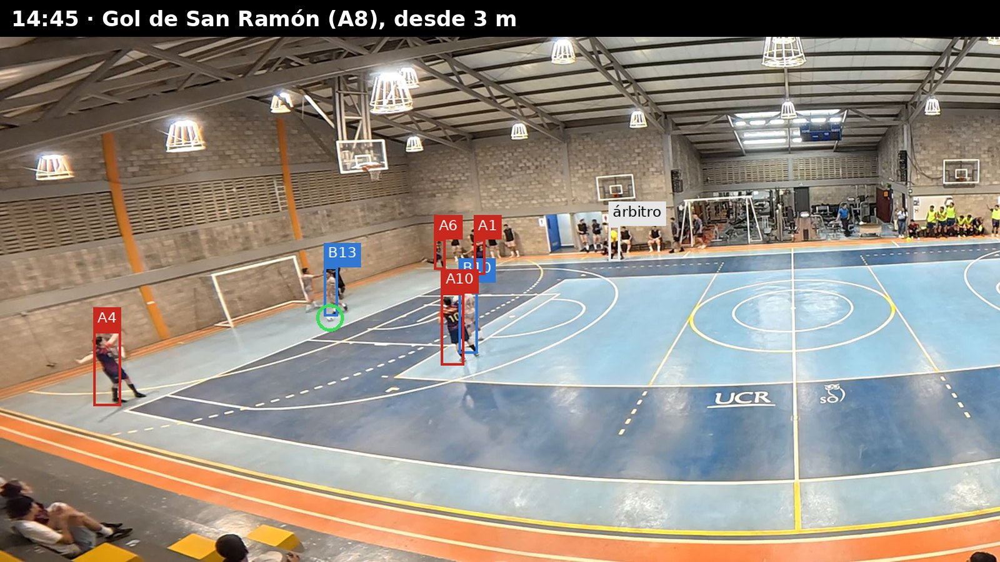
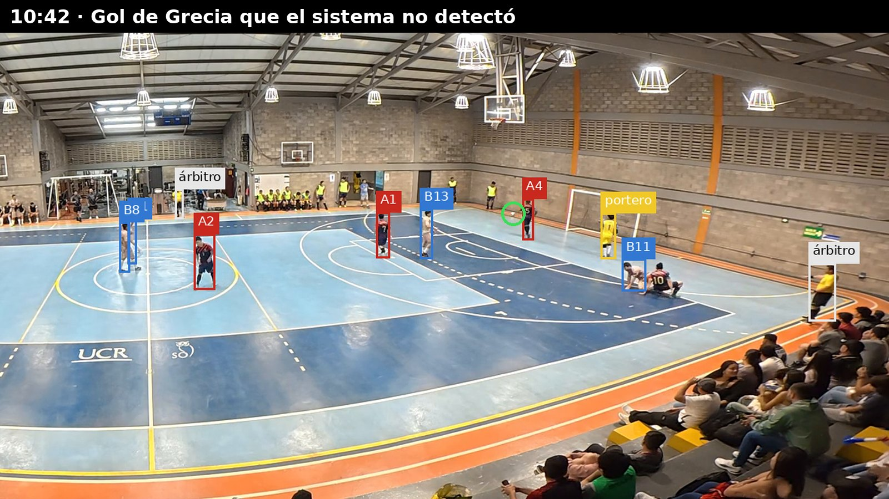
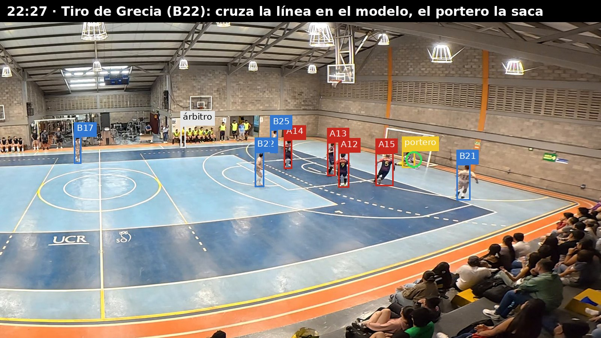
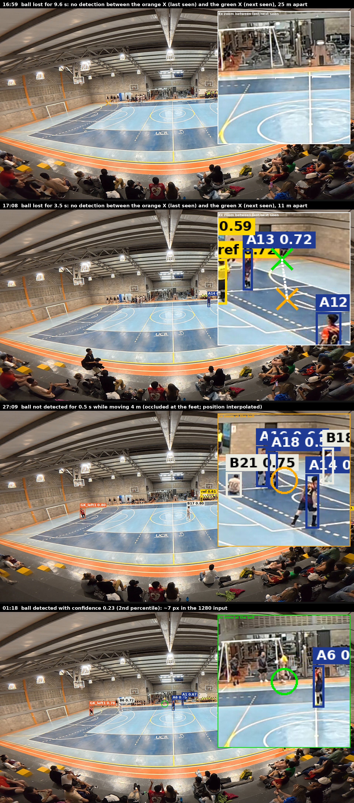
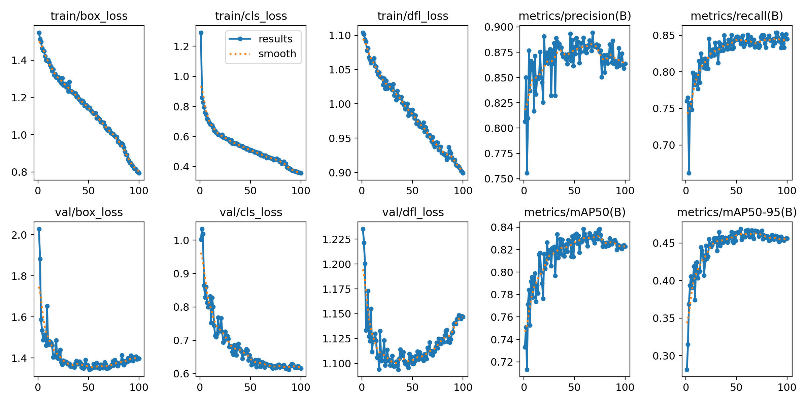
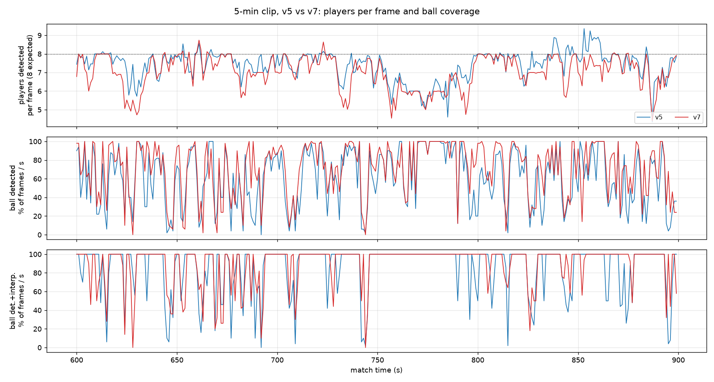
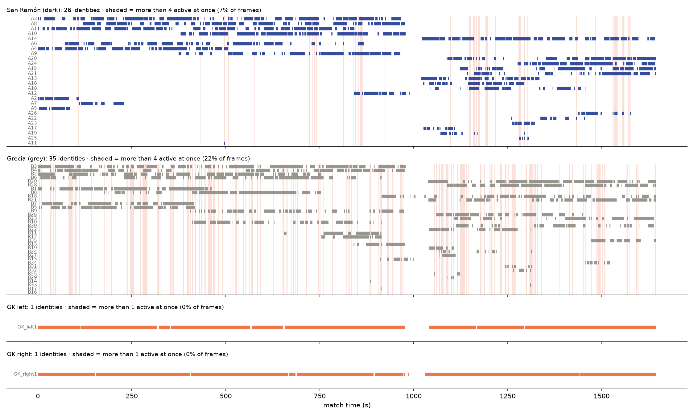
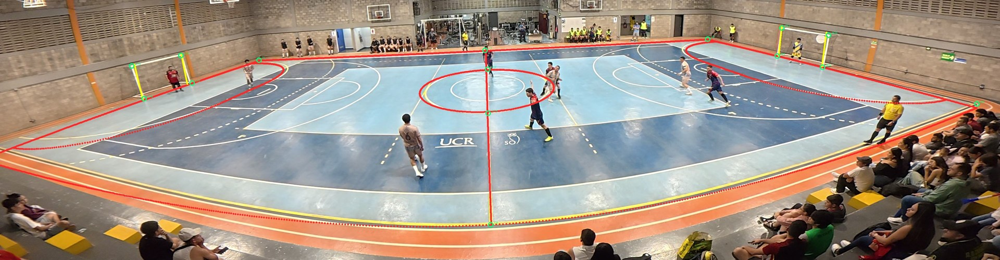

Universidad de Costa Rica · Sede de Occidente · proyecto de investigación C6316
Un primer tiempo de futsal, leído por una sola cámara provisional
San Ramón vs Grecia, 9 de mayo de 2026, primer tiempo (27 minutos). Una cámara fija 4K, un detector entrenado con partidos propios y un procesamiento sin intervención manual.
Resultados del proyecto C6316, «Implementación de un protocolo para el análisis del rendimiento deportivo mediante videos, utilizando algoritmos de inteligencia artificial: una aplicación en fútbol sala», inscrito en la Vicerrectoría de Investigación de la UCR (2026–2027).
La posesión es un indicador aproximado: cuadros en que el jugador más cercano al balón (≤ 2.5 m) es de cada equipo. Resultado real del tiempo: 3 – 1; el gol de Grecia no se detectó (ver límites).
Mapa de tiros
Cada flecha sale del punto donde se golpeó el balón y apunta a donde su trayectoria alcanzó la línea de meta (o la habría alcanzado). San Ramón ataca la portería de la izquierda; Grecia, la de la derecha. Pasa el cursor por cada flecha.
Ver la tabla de eventos
Línea de tiempo
Tiros, goles y saques de centro a lo largo de los 27 minutos. Cada gol detectado va seguido del saque de centro del equipo que lo recibió: esa formación es, de hecho, lo que el sistema usa para confirmar el gol.
Momentos clave, tal como los vio el sistema
Cuadros del video de 1080p con las cajas del detector, la identidad asignada y el balón (anillo verde: detectado; naranja: interpolado). Los recortes amplían la mitad donde ocurre la jugada.






Mapas de calor
Ocupación de los jugadores de campo durante el tiempo completo, en celdas de 0.5 m, relativa al máximo de cada equipo. Los porteros no se incluyen. Grecia, con el 74 % de la posesión, ocupa sobre todo el campo de San Ramón; San Ramón se concentra delante de su área y ataca a la contra.
Distancia recorrida
Por identidad de seguimiento (A1, B4, …), no por dorsal: una identidad dura entre 1 y 11 minutos y puede corresponder a más de una persona tras una sustitución. Trayectoria suavizada a 0.5 s antes de integrar; velocidad máxima con ventana de 1 s.
Ver la tabla completa
Cómo se construyó
Del video a las estadísticas hay seis etapas. Las dos primeras corren en una GPU del clúster de la UCR; el resto, en cualquier computadora.
Un detector de cuatro clases entrenado con partidos propios
Los detectores genéricos no ven un balón de futsal a 30 m. Se anotaron 1 291 cuadros 4K de cuatro partidos (San Ramón, Grecia, Caribe y Los Chiles) con cuatro clases: bola, juga (jugador de campo), port (portero) y ref (árbitro). Con un duplicado aumentado por imagen son 2 274 imágenes a 1280 × 1280 px, 207 de validación. El modelo es YOLOv8m preentrenado, 100 épocas, unas dos horas en una GPU A100.
| Versión | Datos | mAP50 | mAP50-95 | balón | jugador | portero | árbitro |
|---|---|---|---|---|---|---|---|
| v4 | 560 cuadros de un partido, 512 px | 69.7 | 40.0 | 17.0 | 87.2 | 91.0 | 83.6 |
| v5 | los mismos cuadros a 1280 px | 81.9 | 45.2 | 60.3 | 89.8 | 89.7 | 88.0 |
| v7 (en uso) | 1 291 cuadros de cuatro partidos, 1280 px | 83.3 | 46.8 | 60.2 | 91.7 | 90.2 | 91.0 |
| v7 sin Los Chiles | validado en el partido no visto | 78.1 | 44.2 | 56.7 | 85.5 | 75.8 | 94.4 |
Precisión media por clase en validación (%). De v4 a v5 la ganancia es resolución: el balón pasa de 17 a 60. De v5 a v7 es amplitud de datos, sobre todo en personas y en la generalización a un partido no visto. El balón se queda en 60 con cualquier volumen de datos porque mide unos 7 px en la imagen que ve el modelo.


Personas: detección a 1080p y seguimiento con BotSort
Las personas se detectan sobre el video reducido a 1080p (confianza 0.4, supresión de duplicados entre clases) y se siguen con BotSort. Con los valores por defecto el rastreador olvida una pista perdida a los 0.6 s y el 20 % de los cuadros tenía cajas dobles. Ajustado para cámara fija (memoria de 3 s, umbral alto para abrir pistas, sin compensación de movimiento) las cajas dobles bajan al 0.3 %, las pistas pasan de 1 219 a 201 en cinco minutos y su vida mediana sube de 0.3 a 5.3 s. En el primer tiempo completo el 36 % de los cuadros tiene exactamente 4 + 4 jugadores de campo con equipo asignado; el resto suele tener uno de menos (tapados entre sí) o uno de más.


El balón: un pase aparte sobre el video 4K
El balón mide unos 15 px en 4K y desaparece al reducir a 1080p. Por eso se corre un segundo pase sobre el video 4K completo a 2560 px, solo con la clase balón y un piso de confianza muy bajo (0.05), que produce muchos candidatos. El filtrado se hace después en el plano de la cancha: se descartan los candidatos que exigirían velocidades imposibles, se encadenan en tramos y se interpolan los huecos de hasta medio segundo. Resultado en el primer tiempo: balón detectado en el 62 % de los cuadros, 85 % con interpolación. Un detector anterior entrenado con cámaras cercanas, aun con mejores números en su propio dataset, solo lo encontraba en el 18 %. Los 27 minutos de video toman 53 minutos en una A100.
- Entrada
- video 4K a 50 cuadros por segundo
- Inferencia
- 2560 px, confianza ≥ 0.05, clase balón
- Filtro
- velocidad máxima y continuidad en metros
- Huecos
- interpolados hasta 0.5 s
- Cobertura
- 62 % detectado, 85 % con interpolación
- Golpeos
- tramos a ≥ 8 m/s sostenidos
De píxeles a metros: calibrar la lente
La cámara tiene una lente gran angular con distorsión fuerte. Sobre un cuadro limpio se marcan a mano unos quince puntos de la cancha (bases y extremos de ambas porterías, extremos de la línea central, esquinas visibles) y se ajusta un modelo de lente ojo de pez: pose de la cámara, focal, punto principal y dos términos de distorsión. Los pies de cada caja (centro inferior) se proyectan al plano de la cancha, de 37.19 × 17.2 m. El error típico es de ±0.3 m en el centro y hasta ±1 m junto a las líneas de meta. Una calibración sirve para todo lo grabado desde la misma posición de cámara; si el trípode se mueve, bastan quince clics nuevos.

Equipos por color e identidades por continuidad
Cada detección recibe un equipo por el color mediano de su torso (en el espacio Lab): camiseta oscura para San Ramón, gris para Grecia; los porteros, por la portería que defienden. Una pista que cambia de equipo se corta en ese punto. Después, por equipo, los segmentos se enlazan fin con inicio mediante una asignación global (algoritmo húngaro con la opción de no enlazar) que pondera distancia recorrida y tiempo transcurrido. El resultado son identidades que duran de uno a once minutos: 26 para San Ramón y 35 para Grecia en el primer tiempo, con un portero por portería. Son identidades del sistema, no dorsales; la lectura de los números de camiseta está en desarrollo y funciona solo en el lado cercano a la cámara.
Las estadísticas, con sus definiciones
- Posesión. Cuadros en que el jugador más cercano al balón está a 2.5 m o menos, contados por equipo.
- Golpeo. Tramo en que el balón supera 8 m/s de forma sostenida.
- Tiro. Golpeo desde 20 m o menos cuya trayectoria apunta a la boca de la portería (±3 m del centro) y que llega a 4 m de la línea, o se pierde en el camino. El tirador es el jugador de campo más cercano al punto de golpeo.
- A puerta. Trayectoria dentro de los 3 m de la portería y balón a 1 m o menos de la línea.
- Saque de centro. Balón quieto en el punto central durante 0.6 s con cada equipo en su propia mitad (al menos tres jugadores de campo en la propia, a lo sumo uno en la contraria).
- Gol. Saque de centro (que no sea el del inicio del tiempo) precedido por un tiro en los 120 s anteriores; el equipo que saca es el que recibió el gol. Un balón que cruza la línea sin saque posterior queda como «posible gol, revisar»: en el video son paradas del portero sobre la línea.
- Distancia. Longitud de la trayectoria de cada identidad suavizada con una ventana de 0.5 s, dentro de cada tramo continuo (se corta en huecos de más de 2 s o saltos imposibles). Sin suavizar, el temblor de la caja cuadro a cuadro infla la distancia alrededor de un tercio.
Validación del detector de goles
| Minuto | Detector | Evidencia | Video |
|---|---|---|---|
| 05:16 | Gol San Ramón | tiro que cruzó la línea; saque de Grecia en 06:20 | confirmado |
| 10:42 | nada | Grecia marca y San Ramón reinicia en 10 s, sin formación | gol perdido |
| 10:45 | Gol San Ramón (inferido) | solo formación de saque; saque en 11:10 | confirmado |
| 14:45 | Gol San Ramón | tiro a puerta; saque en 15:05 | confirmado |
| 22:27, 24:30, 25:21 | posible gol | balón cruzó la línea, sin saque posterior | paradas sobre la línea |
Tres de los cuatro goles reales se detectaron, sin falsos positivos. El gol de Grecia se pierde por la regla del saque, no por el balón.
Cómputo. Entrenamiento: unas 2 h en una GPU A100. Primer tiempo: pase de personas 42 min, pase de balón 53 min, ambos en el clúster HPC de la UCR mediante SLURM. El posprocesamiento (proyección, equipos, identidades, balón, estadísticas) corre en CPU en una computadora de escritorio en menos de media hora. Herramientas: Ultralytics YOLOv8, BotSort, NumPy, SciPy, Matplotlib, ffmpeg. Todo el código, los CSV y los pesos de los modelos están en el repositorio y su página de versiones.
Lo que todavía falla
- Goles con reinicio rápido. El gol de Grecia (10:42) no se detectó porque el juego se reanudó en diez segundos, sin la formación que busca el detector. Hace falta una segunda señal, por ejemplo el balón cruzando la línea y los jugadores retrocediendo.
- Identidades, no dorsales. Una identidad puede mezclar a dos personas tras una sustitución, y una persona reparte sus minutos entre varias identidades.
- El balón es el cuello de botella. Se ve en el 62 % de los cuadros; se pierde en despejes largos, en el aire y entre piernas.
- Precisión de medio metro. La calibración y la posición de los pies en la caja limitan cualquier medida a unos 0.5 m; junto a las líneas de meta, a 1 m.
- Distancias provisionales. El suavizado reduce el temblor pero no elimina del todo el ruido; los valores por minuto son una estimación razonable, no una medida de posicionamiento.
- Un solo tiempo. El segundo tiempo y los demás partidos grabados están pendientes de procesar.
El tiempo completo en video
Los 27 minutos del primer tiempo, enderezados, tal como entran al sistema. Sirve para comprobar cualquier evento de la tabla con el minuto en la mano.
El video está en YouTube. También se puede descargar una versión de 720p (111 MB) y el clip anotado de un minuto alrededor del tercer gol, con identidades y balón dibujados, desde la página de versiones del repositorio: GitHub o git.ucr.ac.cr.
Datos y código
Todo lo que se muestra se genera a partir de tres CSV y un JSON de resumen del primer tiempo, disponibles en el repositorio junto con el código.